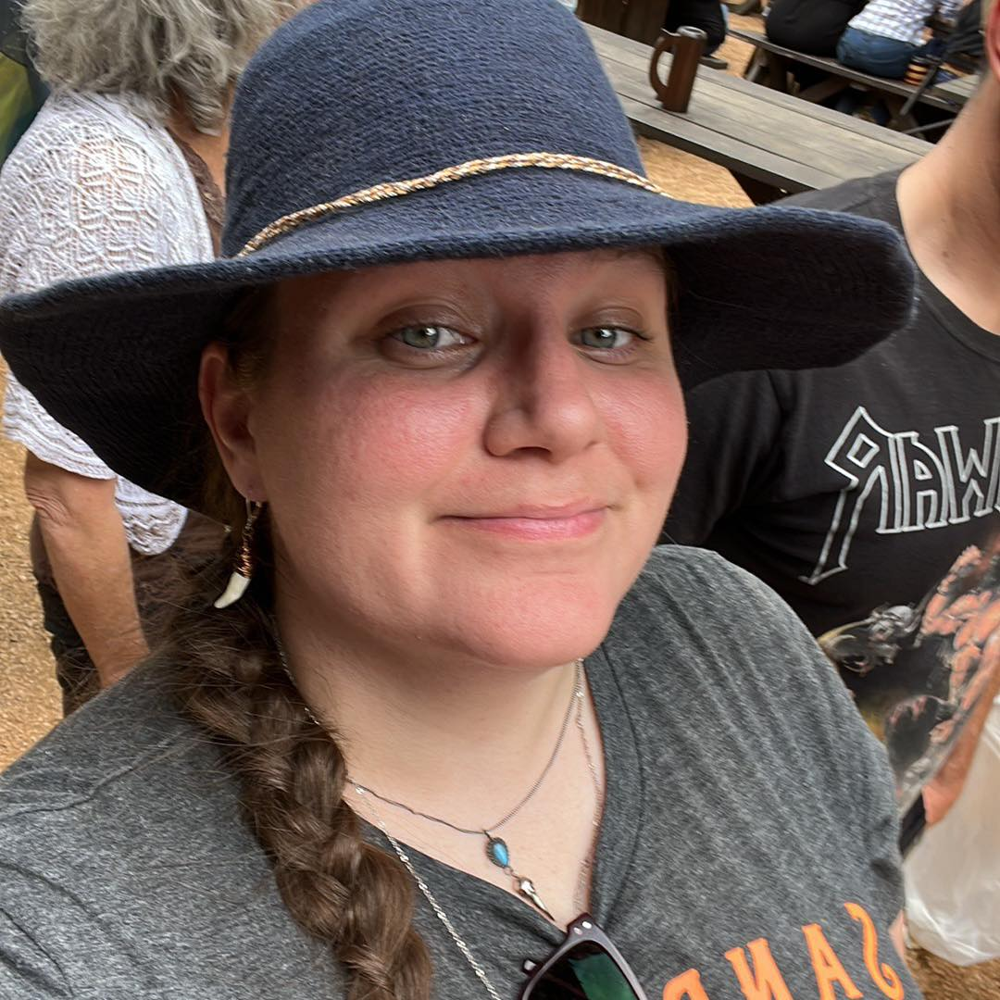

Cristen Currie

Summary
I am an experienced Technical Support Professional with a background in customer service, technical troubleshooting,
and training to become a developer. I have a passion for technology and helping others learn how to use it. I am a quick
learner and have a strong attention to detail. I am looking for a role where I can use my skills to help others and continue to learn new things.
Experience
FROM JANUARY 2020 TO PRESENT - FACEBOOK HOME AND DEV INFRA TRIAGE SPECIALIST, WIPRO LTD.
- Mastered multiple Meta products across Android, iOS, and Chrome, consistently delivering high-quality results on high-visibility projects within strict weekly deadlines.
- Diagnosed complex issues within various internal tools, contributing significantly to support documentation for both in-office and remote teams.
- Maintained superior Quality ratings on tasks worked and assisted in improving their team’s overall Quality of 100% and SLA of 100%.
FROM OCTOBER 2017 TO DECEMBER 2019 - ITUNES+ SUPPORT ADVISOR, APPLE INC.
- Analyzed, isolated, and resolved a variety of complex technical issues for iOS and OS X systems.
- Expertly navigated a highly technical environment and quickly became an expert in multiple products, managing high workload, and updatedcritical support documentation.
- Received an average 9.4/10 rating from Apple consumers as remote technical support.
FROM SEPTEMBER 2016 TO OCTOBER 2017 - ONSTAR CONNECTION CENTER SPECIALIST, ALORICA AND CONCENTRIX
- Delivered remote technical support across diverse platforms, quickly resolving issues and maintaining a 9/10 average member satisfaction rating.
- Trained over 50 hires per quarter, serving as subject matter expert in operational procedures and overseeing adoption of technology and company processes.
Education
- Bachelor of Music Education, University of North Texas - May 2007
- High School Diploma, Plano Senior High School - May 2006
Skills
- Proficient in iOS, MacOS, and Android OS.
- Proficient in Google Workplace, Microsoft Office, and Mac suite.
- Experienced in triage and personal use of the Meta family of apps and websites.
- Experienced in technical writing at Meta, Apple, and OnStar for updating knowledge base articles.
- Adept at learning new technology.
- Adept at helping others acclimate to new technology.
Other